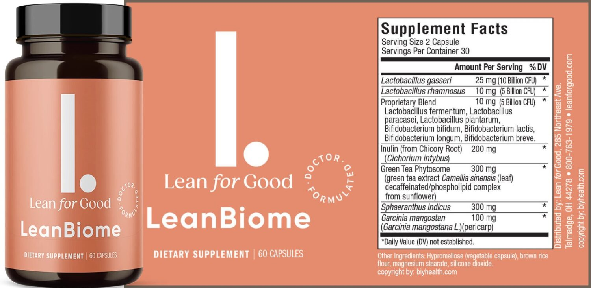

Losing weight can be a challenge, and there are many different ways to do it. Some people choose to do it by changing their diet and lifestyle, while others choose to use supplements or remedies that can help to facilitate weight loss.
In this article, we will take a closer look at some different supplements and remedies that can be effective for weight loss. We will also discuss the potential risks and side effects that can be associated with these products.
There is a wide range of supplements that are marketed as weight loss aids. These supplements can contain a variety of ingredients, including:
Meal replacements are products that replace one or more meals. They are often designed to be low-calorie and nutritious. Meal replacements can be an effective way to lose weight quickly, but it is important to use them in a healthy way.
It is important to read the label carefully before using a supplement or meal replacement. Some products may have potential side effects, so it is important to talk to your doctor before you start using them.
In some cases, medications can be an effective way to lose weight. There are three prescription medications that are approved for weight loss in the United States:
Weight loss medications can be effective for losing weight quickly, but they can also have side effects. It is important to talk to your doctor before you start using these medications.
The best way to lose weight is often to combine different methods. This can include diet changes, exercise, supplements, and medications.
If you are considering using supplements or remedies for weight loss, it is important to do your research and talk to your doctor. It is also important to remember that there are no miracle cures for weight loss. The best way to a healthy weight is to make lifestyle changes that you can stick with in the long term.
Here are some tips for losing weight in a healthy way:
If you are struggling with your weight, it is important to seek help from a doctor or dietitian. They can help you develop a weight loss plan that is safe and effective for you.
When considering the use of supplements or remedies for weight loss, keep the following in mind:
Losing weight can be a challenge, but it is possible to do it in a healthy way. By making lifestyle changes, such as eating a healthy diet, exercising regularly, and getting enough sleep, you can reach your weight loss goals and maintain a healthy weight in the long term.
LeanBiome is a weight loss supplement that contains beneficial gut bacteria strains that help boost weight loss. The formula restores the balance of good and bad bacteria in your digestive system, and LeanBiome helps to reduce cravings and increase energy levels. The supplement contains metabolism-boosting components that have been clinically studied and proven to reduce stubborn body fat.
The LeanBiome weight loss supplement is designed to promote healthy, natural fat loss while decreasing fat storage. It contains numerous important microorganisms that support the body’s natural processes to optimize weight loss. The formula can help you lose between 10 and 50 pounds of stubborn fat if you follow the instructions.
LeanBiome works by reversing the disruption caused by bacterial imbalances in your gut microbiome, a recently discovered factor contributing to mysterious weight gain. By providing your gut microbiome with healthy bacteria, as a result, you can lose weight quickly by suppressing your appetite and curbing unhealthy food cravings. Also, you will be free of gastrointestinal disorders like bloating and inflammation. The supplement contains scientifically proven ingredients such as Greenselect Phytosome and several ‘lean bacteria’ species. Designed to boost metabolic rate and aid weight loss, these proven ingredients increase your metabolism.
LeanBiome is a weight loss supplement that is designed for people who want to lose weight naturally and safely. The supplement is ideal for people who have tried other weight loss methods without success and are looking for a new approach to weight loss. LeanBiome is also suitable for people who want to lose weight without having to follow a strict diet or exercise routine. The supplement is designed to help you lose weight by restoring the balance of good and bad bacteria in your digestive system, which can help reduce cravings and increase energy levels.
Leanbiome's marketing strategy emphasizes responsible promotion, highlighting its health benefits while steering clear of any controversy. This contrasts with Ayds Diet Candy's unfortunate name-related challenges.
Leanbiome has achieved remarkable success by addressing a genuine need in the market. Many individuals find traditional diets difficult to adhere to and often struggle to achieve lasting results. Leanbiome offers a viable alternative that is user-friendly and has demonstrated its effectiveness.
Leanbiome is a safe and effective dietary supplement that provides a compelling option for those seeking a healthier approach to weight management. Its positive name, natural ingredients, clear target audience, and responsible marketing distinguish it from products like Ayds Diet Candy that faced challenges rooted in unfortunate circumstances.
Home | Contact Us | Blog